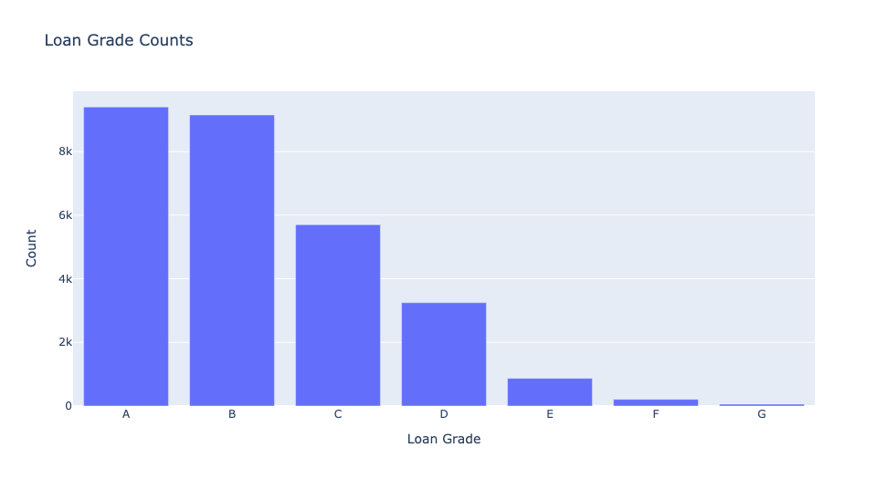
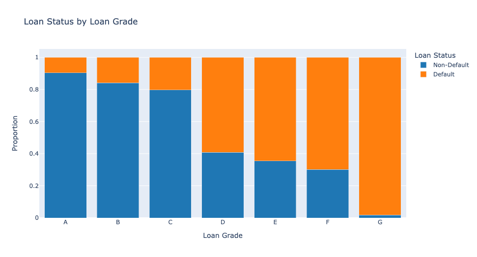
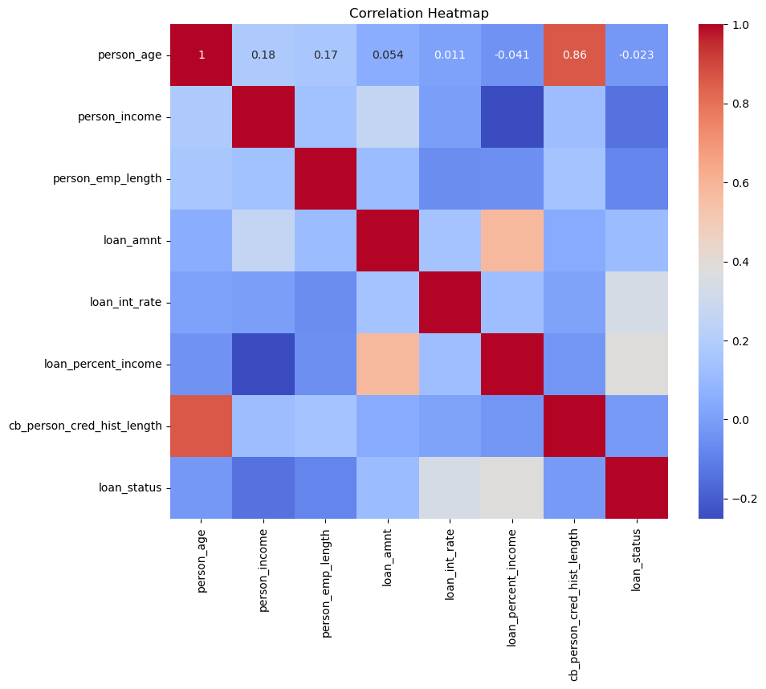
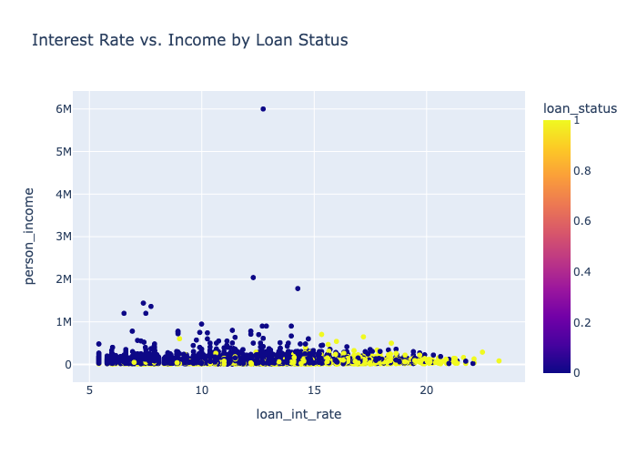
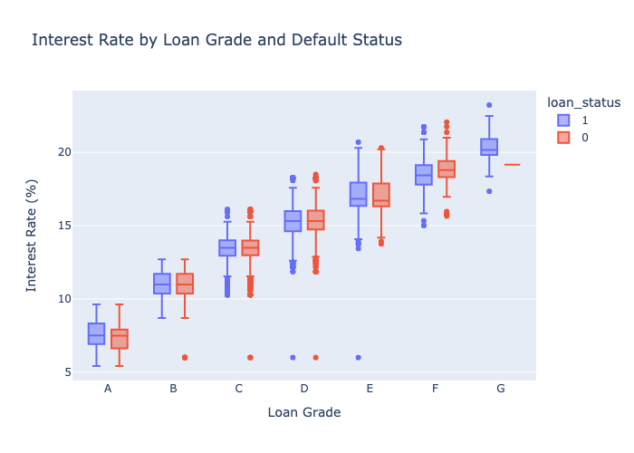

Loan Grade Counts
This figure illustrates the distribution of loans across various credit grades, which indicate the creditworthiness or risk associated with each loan. Loan grades, ranging from A to G, are assigned based on factors such as the borrower’s credit history, income stability, and repayment capacity, with A representing the lowest risk and G the highest risk. The bar chart shows that the majority of loans are concentrated in grades A and B, suggesting that most borrowers fall into low-risk categories. As the grades progress from C to G, the number of loans decreases, with very few loans assigned to the riskiest grades (F and G). This trend indicates a preference for lending to higher-quality borrowers, while loans with higher risk are less commonly issued.
To better understand how loan grade is correlated with default risk, lets visualize the proportion of loans that default based on grade.
Loan Status by Loan Grade
This figure is a stacked bar chart that illustrates the proportion of loans categorized by loan grade (A through G) and their corresponding loan statuses (non-default and default). Loan grades represent the credit risk of a loan, with A being the lowest risk and G the highest. Loan statuses indicate whether a loan was repaid as agreed (non-default) or failed to meet repayment obligations (default). The chart shows that for higher-quality grades (A and B), the proportion of non-default loans is significantly higher, indicating lower default rates. As the grades move from C to G, the proportion of defaults increases markedly, with F and G having the highest default rates. This pattern demonstrates a clear correlation between loan grade and repayment performance, emphasizing the importance of credit risk assessment in lending decisions.
Now that we have visualized how default rates differ by grade, lets look at the interest rates the correspond to loan grade.
Correlation Heatmap
The heatmap illustrates the relationships between key variables like income, loan amount, and default loan status. High correlation is observed between credit history length and age.
ADD FURTHER ANALYSIS
Next, we examine how income affects interest rates to uncover additional trends.
Interest Rate vs Income
This scatter plot shows the relationship between loan interest rate and borrower income, segmented by loan default status.
ADD FURTHER ANALYSIS
The final chart explores how interest rates vary by loan grade, providing a comprehensive view of financial risk.
Interest Rate Boxplot by Loan Grade
Boxplots demonstrate that lower-grade loans (i.e. F and G) have higher interest rates, with visible differences by default status. ADD FURTHER ANALYSIS